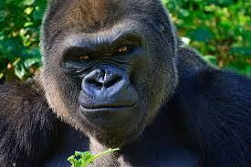

King Bong is the ruler of Vilivil Village. His reign has lasted 27 long years.
His zodiac sign is Capricorn. He has a younger sister named Bing, who is next in line for the throne. Bing is an Aquarius.
Bong suspects she has hired an assassin to kill him, becasue she wants the power of Vilivil to herself.
Fun Fact! King Bong's therapist has classified him as paranoid, and a danger to himself and others!
Extracted from the best selling book about King Bong's life - "King Bong: The Gorilla Behind the Crown"
Click here to listen to the audio book "King Bong: The Gorilla Behind the Crown"
Trentilla is a 32 year old business owner in Vilivil. She owns a salon, in the village.
Trentilla is a very active member of the community, and she is on the Vilivil council.
Trentilla was a founder of the Save Vilivil Foundation.
Trentilla donates all her profits from her salon to SVF, and volunteers on weekends to tend to the plants in the Vilivil community greenhouse.
Trentilla loves pickles and in her spare time she makes her own preserves, jams, and jellies, which she sells at the Vilivil farmers market.
